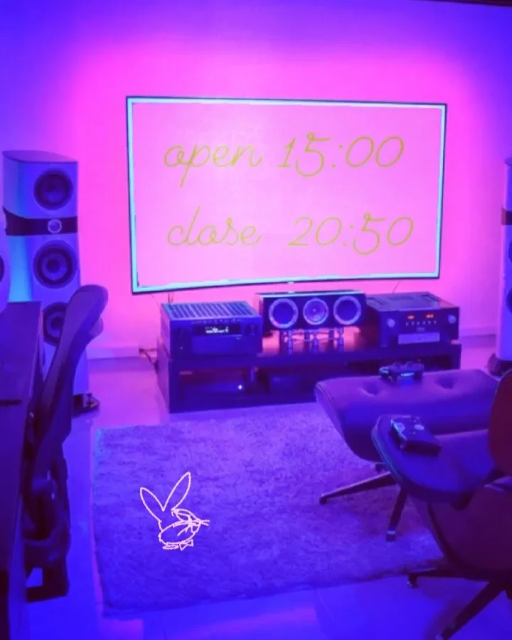

2021年3月1日
業務連絡！

業務連絡！ 業務連絡！！ 料理長へ 今日から営業時間変更します！ 最近は営業時間変更をSNSに投稿した方が良いそうなので！ 【Open 】15：00 【food last 】20:00 【drink last 】20:30 【close】20：50 お客様の流れも変わると思いますので仕込む量を調節してください。 #中華バル#中華#中華料理#福島区グルメ#路地裏#B級グルメ#中国#チャイニーズ#路地裏チャイニーズ有馬#有馬#シュウマイ#餃子#点心#フォローミー#followme#パクチー